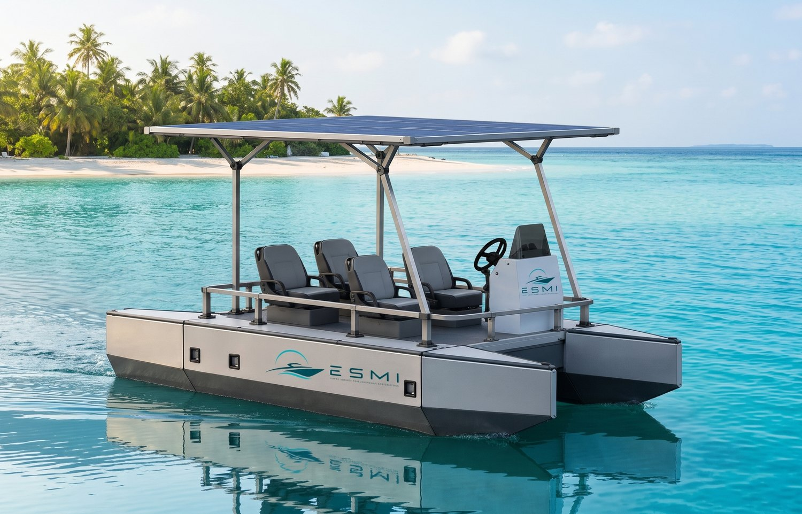
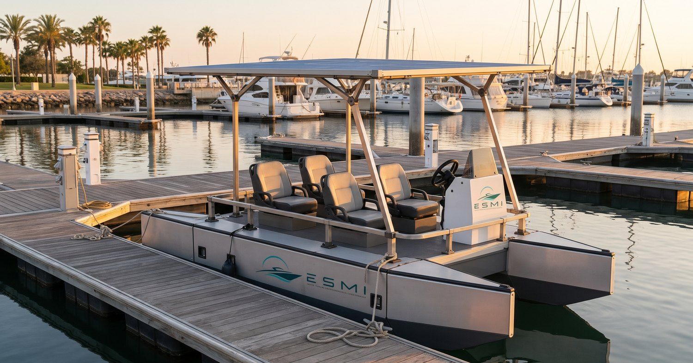
June Delgado Founder of ESMI
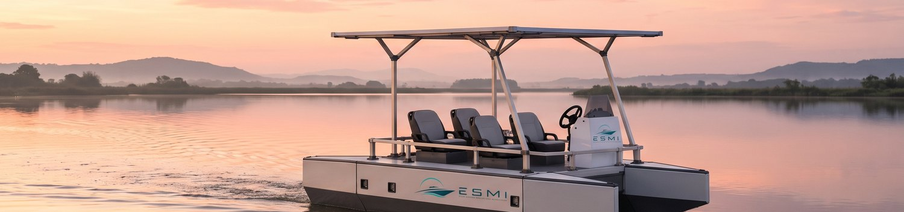
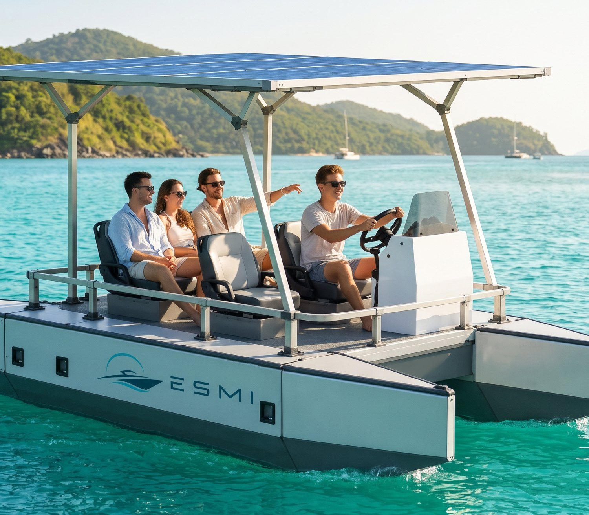






June Delgado founded ESMI, Eboat System Merchandising Incorporated, in November 2025 with one clear purpose: to give the coastal communities that live from the sea access to clean, quiet and affordable solar electric boats.
The idea took shape in the field. During surveys across Coron, Palawan and the neighbouring island communities, June and his team spent time with local fishers and boat operators and saw the same challenges again and again: fuel that takes a large share of every day's catch, engines that are hard to repair far from a workshop, and noise and fuel spills affecting the reefs and fishing grounds that families depend on.
Those conversations led to the decision to build ESMI. The answer is a modular, solar-powered boat that is shipped in parts, delivered to the door and assembled on site, with simple components that are easy to maintain. It runs on sunlight instead of fuel, its deck can be widened to carry up to six seats, and it can be configured for fishing, island transport or tourism.
Today, ESMI works hand in hand with local fishers, cooperatives and tourism operators to put solar electric boats within reach, helping them lower their daily costs, protect their waters and build a more sustainable livelihood for the next generation.
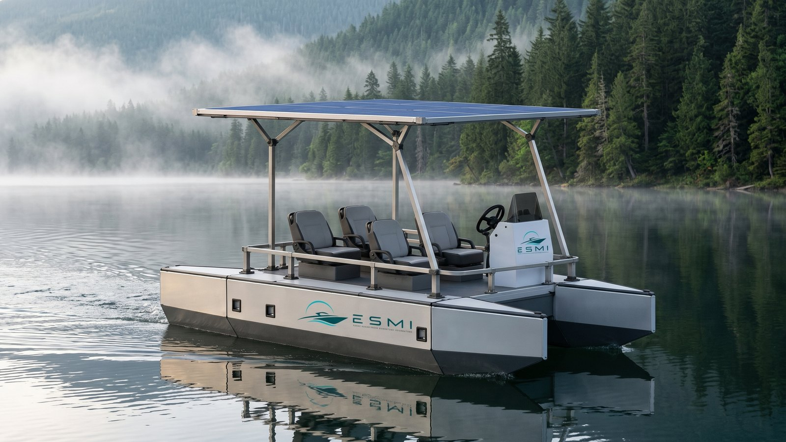
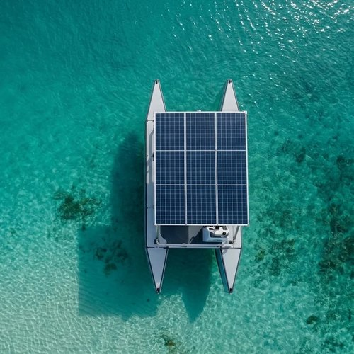
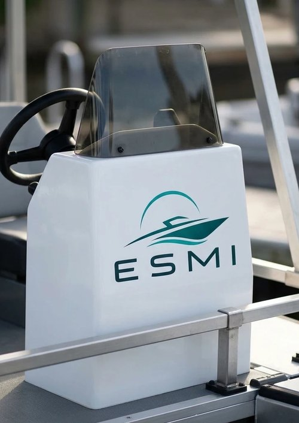
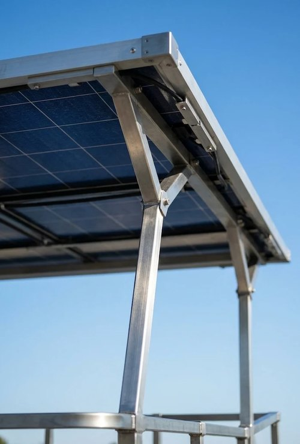
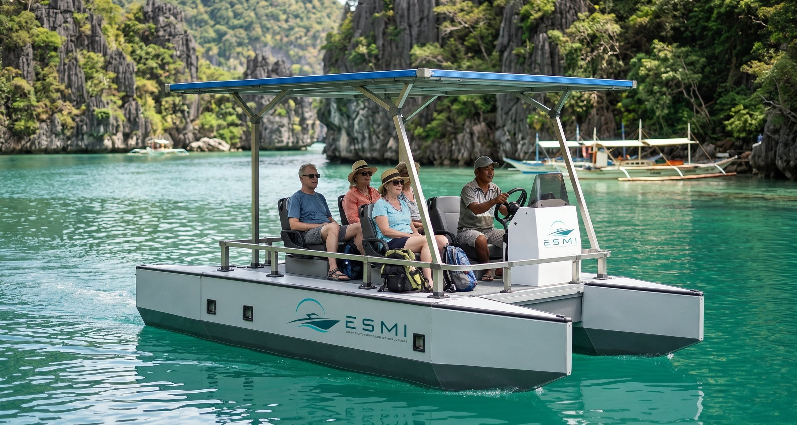
Silent & fuel-free Island-hopping tours - Coron, PalawanFuel is one of the largest daily costs for tour operators. ESMI boats run on sunlight, cutting fuel spend to near zero while giving guests a quieter, fume-free trip between lagoons and reefs.
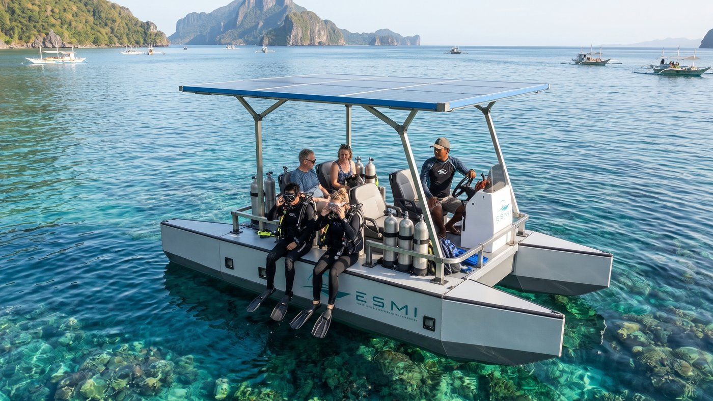
No exhaust and low vibration over the reef: a calmer experience for divers and a cleaner one for the coral that dive businesses depend on.
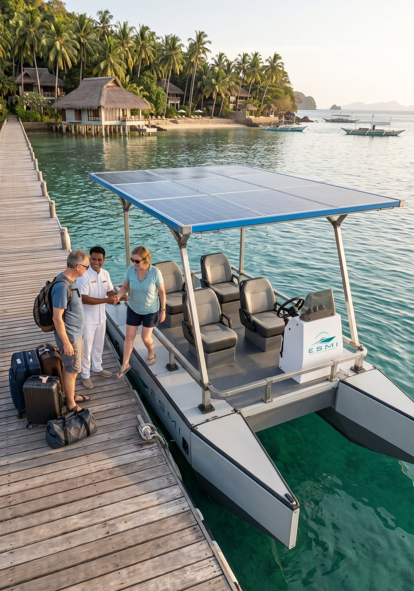
Premium & on-brand Guest shuttles for island resortsA visibly sustainable guest transfer that matches a resort's eco promise. One partner, several boats, with crew training and service included.
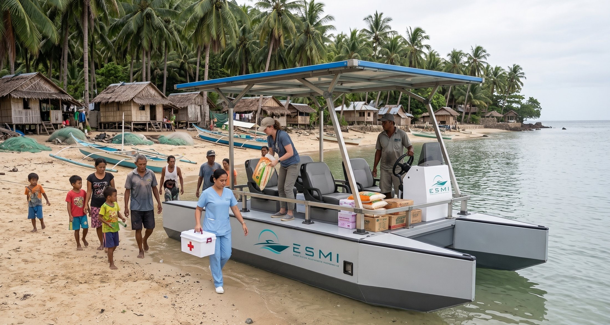
Essential & reliable Medical and goods transport for remote islandsFor local governments and NGOs: a commercially available boat for inter-island medical deliveries, goods transport and disaster response, ready to deploy across many communities, not just one.
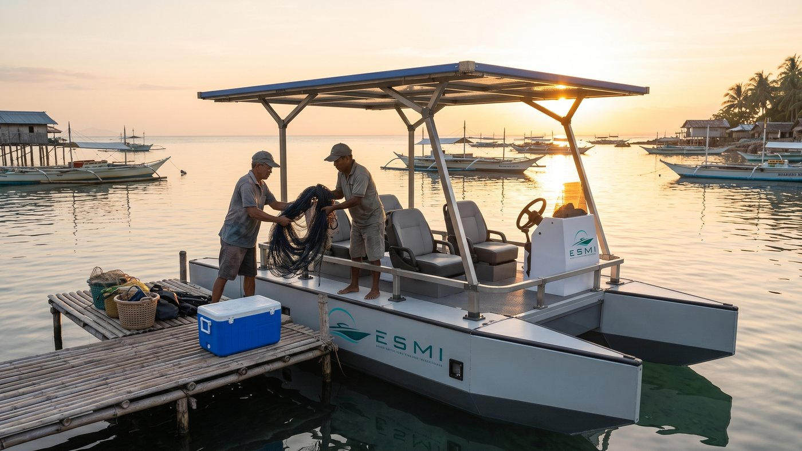
Lease and rent-to-own options priced against today's fuel spend, so more families can switch to clean, low-cost boats.
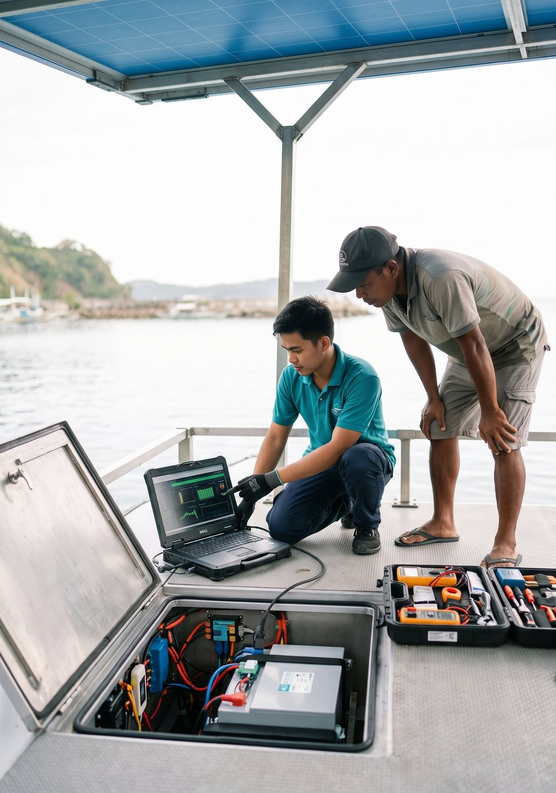
Maintained & supported Service, training and battery careBattery health checks, system updates and a battery replacement program, plus training for operators' own crews on everyday maintenance.
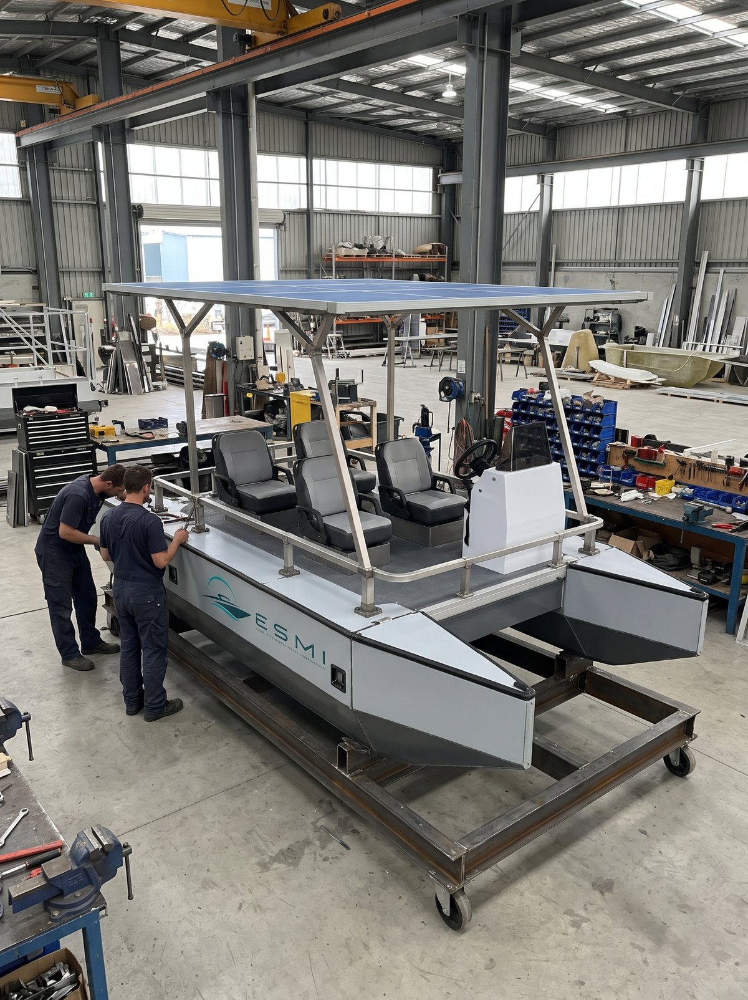
Every ESMI boat is engineered around one idea: use as little energy as possible, and make all of it from the sun. Two slim aluminium hulls slip through the water with less drag than a single wide hull, so the electric drive needs less power to keep the boat moving.
The solar roof is also the canopy: the panels that shade passengers charge the batteries all day long, while the boat is cruising and while it waits at the pier. A battery management system balances every charge and discharge to protect the cells and extend their life.
The electric drive turns stored energy straight into movement, without the heat, noise and losses of a combustion engine. No fuel to burn, no exhaust and no oil in the water: just a quiet, low-vibration ride that is kinder to passengers, reefs and marine life.
Built to come apart. The hulls, deck panels, posts, solar roof, seats and helm console are separate modules joined with bolted connections. The boat can be disassembled to travel in a van or a shipping container, delivered to islands without a boatyard, and assembled on the shore by a small team.
The same design makes storage simple: in typhoon season or the quiet months, the boat can be taken apart and kept indoors, away from storms and salt. A damaged part can be replaced on its own instead of repairing a whole hull.
Marine-grade materials, from aluminium hulls to stainless fittings and sealed electrical compartments, are chosen to resist corrosion in tropical salt water, and every system is laid out for easy inspection and battery servicing by trained local crews.